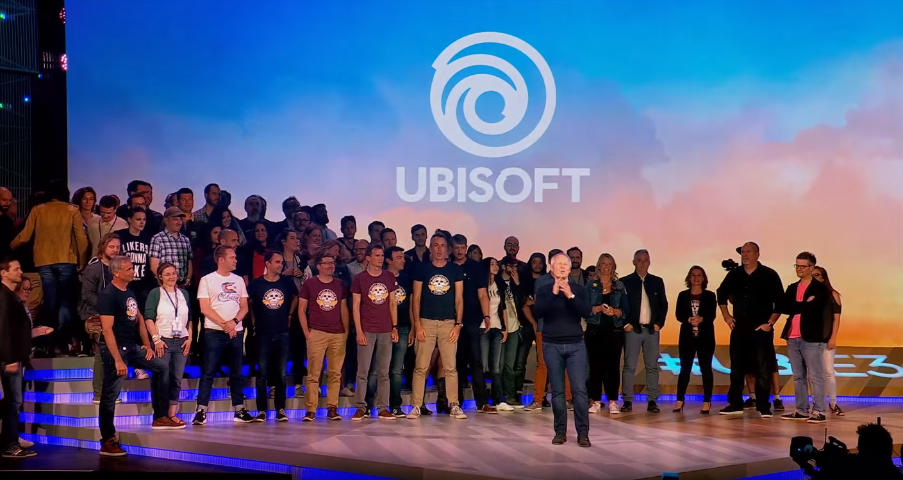

Ubisoft is een bekend Frans videogamebedrijf dat in 1986 werd opgericht. Ze zijn bekend om hun populaire franchises zoals Assassin's Creed, Far Cry en Just Dance. Ubisoft heeft wereldwijd studios en kantoren en staat bekend om het creëren van immersieve open-wereldervaringen. Ondanks enkele controverses blijft Ubisoft een belangrijke speler in de gamingindustrie.
Ze voeren verschillende zaken uit onder andere de videogame-industrie dat zich richt op het ontwikkelen, uitgeven en distribueren van hoogwaardige videogames. Ze hebben een breed scala aan populaire gamefranchises en zijn bekend om hun streven naar innovatie en meeslepende spelervaringen. Met interne ontwikkelingsteams over de hele wereld creëert Ubisoft games in verschillende genres, variërend van actie-avontuur en role-playing tot first-person shooters en sport. Ze streven ernaar om spelers boeiende verhalen, gedetailleerde spelwerelden en interactieve gameplay te bieden. Naast het ontwikkelen van games heeft Ubisoft geïnvesteerd in nieuwe vormen van entertainment, zoals animatieseries en films gebaseerd op hun gamefranchises. Ze streven ernaar om spelers over de hele wereld te voorzien van boeiende en vermakelijke ervaringen, en blijven constant streven naar technologische vooruitgang en creatieve vernieuwing in de gamingindustrie.
Ik wil zeer graag mijn mening geven over deze company omdat er zijn 3 grote punten waaraan ik mij irriteer, ze hebben prachtige Assassin's Creed Serie gemaakt maar ze zijn nog niet perfect en hier waarom:
Volgens mijn mening zijn er enkele kritiekpunten op Ubisoft die ik wil benadrukken:
1 Herhaling van gameplay en formule: Naar mijn mening lijkt Ubisoft soms vast te houden aan een bekende formule en herhaalt het dezelfde gameplay-mechanismen in veel van hun spellen. Het gebrek aan innovatie en vernieuwing kan leiden tot een gevoel van voorspelbaarheid en verminderde interesse bij spelers.
2 Overmatige focus op microtransacties: Ik denk dat Ubisoft soms te ver gaat met het implementeren van microtransacties in hun games. Het lijkt erop dat ze spelers proberen te verleiden om extra geld uit te geven om bepaalde inhoud of voordelen te ontgrendelen. Dit kan afbreuk doen aan de speelervaring en het gevoel van eerlijke progressie ondermijnen.
3 Problemen met bedrijfscultuur: Naar mijn mening heeft Ubisoft in het verleden serieuze problemen gehad met hun bedrijfscultuur. De beschuldigingen van seksuele intimidatie en misbruik binnen het bedrijf zijn verontrustend en werpen een schaduw over hun reputatie. Het is belangrijk dat een bedrijf een veilige en respectvolle werkomgeving creëert voor al zijn medewerkers.